大龍寺/愛知県名古屋市
今回はちょっとややこしいよ
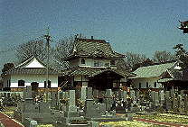 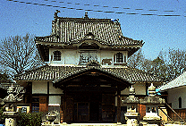 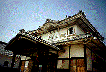 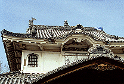
かつて江戸に五百羅漢寺という江戸期最強の珍寺があった。現在は目黒に移転し、大きく様変わりしてしまったのだが、この寺が本所にあった頃に日本の建築史の特異点ともいえる妙な建物がふたつあった。
ひとつは栄螺堂、そしてもうひとつは羅漢堂である。
栄螺堂に関してはその類型の建物が関東近県にいくつかあり、当時の姿を何となく想像できることは以前紹介したが、羅漢堂に関してもレプリカとも呼べる建物があり、当時、江戸の人々を驚愕させた本所羅漢寺の羅漢堂と同じ空間体験ができる。その寺こそ名古屋の大龍寺なのである。
大龍寺の建築についてはなす前にまず本所五百羅漢寺の羅漢堂（以下、本所羅漢堂と記す）について述べる。
本所羅漢堂とは読んで字のごとく五百羅漢を奉ってある堂である。通常、羅漢堂といえばお堂の内部の一番奥、又は左右の壁面に羅漢像がズラリと並んでいる形態が一般的である。この場合、参拝者はお堂の中央附近で500の羅漢像を「ひと目」で見ることになる。しかし本所羅漢堂の場合これらの羅漢像を一体一体きちんと見せるため奇抜なアイデアを採用したのだ。参拝者自信が回廊状の通路を歩いて回り羅漢像を参拝するのである。つまり観察者が移動することによってその空間を認識するのである。従来の寺院参拝が劇場で芝居を観るような行為だったのに対して本所羅漢堂（栄螺堂も）は
美術館で絵画を観るような作業によって（宗教的な）空間認識をさせる、という画期的なものだったのである。
だが、ここまでならそれほど珍しい建物にはならなかっただろう。京都の三十三間堂のように横長のお堂を造ってしまえばいいのだから。しかしこの寺のコンセプトはそんな簡単な建築では済まされなかった。
所詮横長のお堂であればお堂に入った瞬間にその空間の全体像が見渡せてしまい、結局劇場で芝居を見ているのと大差ないものになってしまう。五百羅漢像の数の多さと細工の緻密さの両方をアピールするためには出来るだけ先が見えず、しかもその通路がいつまで続くのか分からない位に複雑にする必要があったのである。
こうして出来た本所羅漢堂は羅漢像が3つの建物に並べられ、しかもそれらの建物が全てひとつに繋がっているという複雑怪奇な平面構成をもつものとなったのである。
本所羅漢堂は大きく3つのパーツに分けられる。ひとつは中央にある本堂、そしてあとのふたつは、その本堂の左右に配された東西羅漢堂である。これらの建物が一つに繋がり全体としてコの字状の線対称の平面になっているのだ。ちなみに参拝順路は中央本堂内陣〜左羅漢堂〜本堂裏手回廊〜右羅漢堂〜本堂内陣というルートである。
その参拝方法だが、この本所羅漢堂では一方通行による所謂「見流し」の形を採用した。そしてさらに履物を脱いでじっくりと参拝したい人用の通路と急いで見たい人用の土間で出来た参拝路のふた通りのルートを用意した。そして各々の動線が交わる箇所には太鼓橋が架けられ立体交差になっていたという。
これらの建物の中を一方通行の参拝路によって進んでいけば一度も外に出ず、一度も同じところを通らず、一度も他の参拝者と鉢合わせせずにすべての五百羅漢像を参拝できるという、まさに「回遊式寺院」と呼ぶべき素晴らしい建築だったのである。しかも二本の参拝ルートが用意されているわけだからかなりの参拝客をさばけるわけだ。
この迷宮のような複雑性と恐ろしいまでの合理性を併せもった空間は栄螺堂とともに（栄螺堂も同じコンセプトによって建てられた建築と思われる）当時の江戸の人気観光地となり、多くの参拝者で賑わったという。
その様子は現在「江戸名所図絵」で確認できる。「江戸〜」中最大のページ数を使い内部の様子が描かれているのを見るとこの羅漢堂がいかに複雑でかつ壮大なものであるかがよくわかる。
前説が長くなったが大龍寺の話しに移る。
本所羅漢堂の完成が亨保13（1728）年。その半世紀後名古屋に本所羅漢堂のレプリカが出来た。大龍寺である。黄檗宗であるこの寺の第四世である僧、指月は江戸の羅漢寺フィーバーに触発され、同じような羅漢堂をつくることを決意する。完成は安永7（1778）年とされている。しかしこの羅漢堂、本所羅漢堂をさらにヴァージョンアップさせて、漆喰塗籠造りとなっているのである。しかも重層で正面は唐破風切り。入母屋の屋根のうえには鯱が乗っていて一見すると城郭風の造りと寺の本堂としては常軌を逸した感さえある。
この大龍寺（地元では五百羅漢といったほうが通りが良いようだが）、現在の地には大正年間に移転してきた。その時、旧状を伝えるために左官工事が１年半もかかったという言い伝えを持つ。
その本堂も現在は傷みが激しいと見え、左右と裏面の外壁には鉄パイプによって補強されていて何とも痛々しい。本堂左右の羅漢堂は外壁および内部の通路、羅漢像の置かれている棚などは最近大幅に修復され、往時の面影は薄いものの参拝の順路はかえって認識し易くなっている。
この羅漢堂、本所羅漢堂のレプリカといったものの本堂と左右羅漢堂を繋ぐ通路の形式に若干の違いはある。また、現在、左羅漢堂と本堂の間の階段が取り外されており、ぐるりと一周することは出来ない。従って当時江戸の人々が熱狂した本所羅漢寺の様子を完全に追体験するのは無理だがそれでもこの空間の持つ不思議な感覚は十分に堪能出来る。
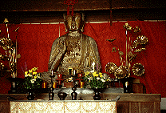 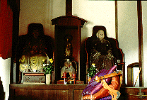
では建物の内部に入ってみよう。まずは中央の本堂。内陣には丈六の釈迦像が奉られておりなかなかの迫力。そして本尊の左の外陣横の外壁にはにじり口のようなアーチが見える。現在は塞がれているが、ここから本堂左にある羅漢堂に行ったのであろう。羅漢巡りのスタート地点だ。見れば逆側の右壁面の同じ位置にも同じようなアーチが確認できる。こちらは右羅漢堂を参拝し終えた客が最後にもう一度本堂に帰ってくるゴールに当たる（ちなみにこの本堂〜左羅漢堂〜右羅漢堂〜本堂という参拝ルートは本所五百羅漢堂の参拝ルートがそうであると仮定されているもので、そのレプリカであるとされるここの参拝ルートもそうである、という二重の仮定に基づいたものなので確実性には欠ける事をお断りしておく）。
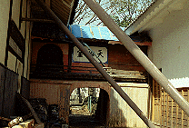 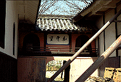 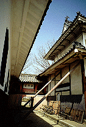
当時は本堂から紅い外壁が印象的な渡りのようなところを通って直接羅漢堂に入れたのだろうが、現在は
一度本堂を出て左の羅漢堂へ入るようになっている。私が訪れた当日、残念ながら左の羅漢堂は鍵があいておらず戸の隙間から内部を確認したのみなのだが、内部はきれいに修復されており、羅漢像が並ぶ様や彼の太鼓橋なども確認できた。そして逆側の右羅漢堂へ。ここも当時は本堂から左羅漢堂を経て本堂内陣の裏側にある隠し回廊のような廊下を通って、やはり紅い外壁の渡りの二階部分（写真の「天祐窟」という額の丁度裏側）を通って右羅漢堂に入っていく、というルートだった。こちらは外から入る戸が開いていたので中に入ってみる。圧倒的な数の五百羅漢像が目に飛び込んできた。
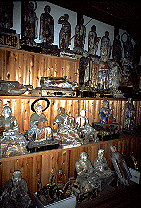 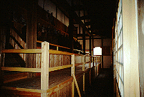 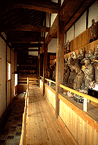
正面の間口に対して奥行きの長いこの羅漢堂は中心にずらりと３段の雛壇状に羅漢像が並んでおりその周りを取り囲むように靴を脱いで参拝する人用の通路があり、さらにその外側に土足用の土間の通路が壁に沿ってある。そして本堂裏の廊下から来た参拝客はまずこの建物の一番奥に並べられている羅漢像に対面し太鼓橋を渡り（その下には土足用通路が横切っている）建物中央の羅漢像をぐるりと一周し、また太鼓橋を渡り（太鼓橋は往路と復路の２レーンが手摺により区切られている）階段を降り、渡り廊下状の通路（「天祐窟」という額の下の部分）を通って本堂に戻ったのだろう。今は塞がれているが。
私は丁度当時の参拝客と全く逆のルートでこの羅漢堂を進んだ。左羅漢堂に入れず、また入れたとしても左羅漢堂と本堂裏手の廊下が「開通」してないので、本堂裏手からこの右羅漢堂に入ることは物理的に無理だったためだ。本堂とを結ぶ渡り廊下のすぐ隣の戸（これは後年につくられたものだろう）から中に入って目の前にある階段の手前で靴を脱ぐ。くどいようだが当時は本堂で靴を脱いだはず。で、階段を登り太鼓橋を渡り右にある階段を降り、左を向くととそこから羅漢像が並ぶ一直線の通路になる。羅漢像は一部修復されたものもあるが中には立てずに寝転がっているものや手首が取れてしまっているものなどあり痛々しい。建物のほうは羅漢像が並んでいる雛壇を始め手摺や外壁などかなり修復されているのでよけいに羅漢像の痛々しさが際立つ。一直線の通路を突き当たるとそこからは左に回り込み、来た道で見た羅漢像の丁度裏手に並ぶ羅漢像を見ながら先程の太鼓橋に戻ってくる。橋を渡り今度は裏手に並べられた羅漢像を眺めながら建物の（正面から見て）左再奥の階段に至る。
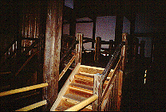 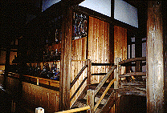 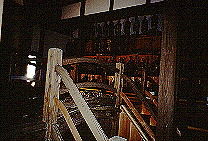 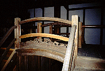
これで逆ルートながら右羅漢堂の参拝は終了。伝説の本所羅漢堂の仕組みがようやく分かりかけて来た。それにしても複雑だ。一方通行なのに道に迷いそうな気がしてくる。
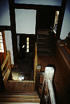 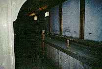 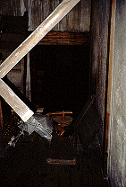
先述の階段を登る。そこは丁度外から見ると「窟祐天」の額の裏側でそこをクランク状に進むと本堂内陣の裏手にいたる。そこは薄暗く、また床が抜けそうなので（本堂の方は修復していない）緊張する。そしてこの暗い隠し回廊のような廊下を突き当たると左羅漢堂が見えてくる。しかし階段が外されているのでそこから先には進めない。ここからも左羅漢堂の内部が伺えるが右の羅漢堂と丁度線対称になっているようだ。突き当たりには仏具や壊れた羅漢像などが転がっておりこれまた痛々しい雰囲気。
そして今度は来た道を逆に通って（つまり順ルートで）右羅漢堂に戻り外に出る。これで大龍寺ツアーはお終い。本所五百羅漢寺ファンの私としては当時にタイムスリップしたような興奮を覚えた迷宮巡りだった。
それにしてもこの本堂あちらこちら傷んではいるが、左右の羅漢堂などはそれなりに修繕してあって、暫くは倒壊しないで済みそうなのでホッとする。このお寺の人もこの建物の重要性がよーく分かってらっしゃるのだろう。願わくば本堂を起点にした往年の羅漢巡りをフル再現して欲しいものだ。
この寺は私にとっては「マイ国宝」なもんで。
そういえばこの寺、アノ聚楽園大仏を造った山田才吉翁の墓もある。彼は生前、東陽館にてここの五百羅漢の出開帳なども行っている。彼も珍寺マニアだったんだねえ。
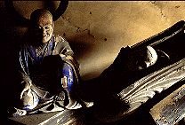
1999.3
追記；「尾張名所図会」にて大龍寺の移転前の図をゲット。現在の写真と見比べられたし。
参照ページ
情報提供はへりおすさんです
珍寺大道場
HOME